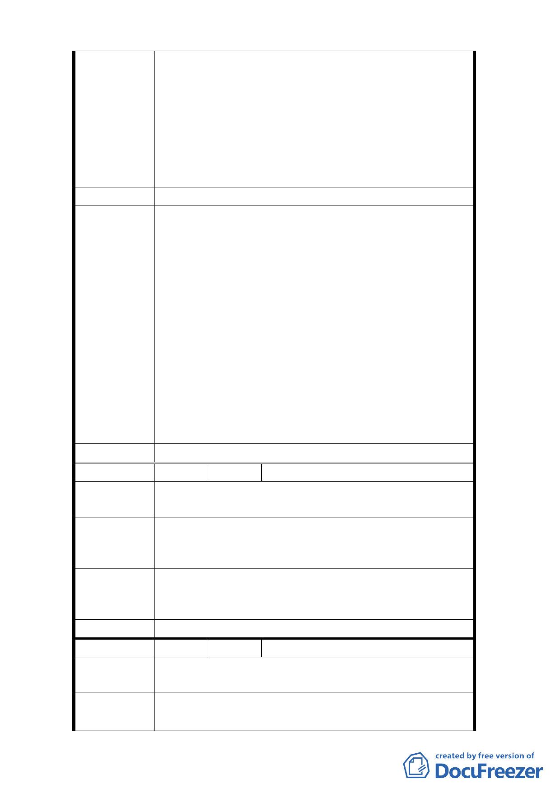

倫街兩側 639 平方公尺及約 1200 平方公尺土地亦先後
同意變更為交通廣場用地及廣場用地，俾配合孔廟觀光
再生計畫及地方發展需求。此次 貴府再變更都市計畫
將庫倫街南側本行原同意變更之廣場用地再增加約 3
倍面積全部變更為停車場兼廣場用地，對國營事業資產
財務影響甚大，故建議可否考慮維持原計畫變更之廣場
用地範圍，本行亦盡力協助該地區環境之整潔及綠美
化。
建 議 辦 法 建議可否考慮維持原計畫變更之廣場用地範圍。
1.本府於 99 年 5 月 26 日與臺灣銀行股份有限公司張總
經理及代表就圓山站西側之環境改善事宜進行會
談。是日會談台銀釋出相當善意，願意配合市府政
策，以推動花博、孔廟計畫及北大同再生計畫。
2.臺灣銀行股份有限公司建議方案本府於研商後，認規
劃合理性及行政執行上有困難，故難以採納。惟為順
利推動政策，本府另就周邊都市計畫、地區現況及未
市府回應意見 來環境改善目標研析，建議調整為庫倫街南側增設 5
公尺道路用地，變更庫倫街為 25 公尺寬計畫道路，
未來並應配合地區交通規劃進行開闢。
3.另配合調整計畫區內所劃設整體開發區範圍，未來建
築開發時可配合地區發展及開發需求為最適規劃，創
造優良公共景觀，提升地區環境品質及土地使用效
益。
委 員 會 決 議 同市府回應意見。
編 號 2 陳情人 梁幼華
陳 情 理 由 （空白）
我們是眷戶（志雲新村共五戶），若有拆遷之情事，請
建 議 辦 法 務必事先通知，後續之安置或補助等事項。新的軍宅在
西藏路約在民國 100 年 5 月才交屋。
有關地上物拆遷、安置補償事宜，後續將由開闢主管機
市府回應意見 關（工務局新工處）依相關法令辦理。
委 員 會 決 議 同市府回應意見。
編 號 3 陳情人 林富福、章平起
陳 情 理 由 （空白）
建 議 辦 法 一、要與交廣用地之拆遷補償標準要一致。
二、希望要有國宅能讓我們安置，不然我沒住的地方。
-4-